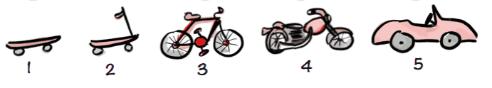

What will the future of professional development look like?
INTUITION.DEV is the futuristic open source tool for pro developers with 10-fold productivity via automation, low-code, cross-platform, static-generator, and a built-in WebAdmin editor, leveraging JAMstack, w/ Pug and facilitating app maintenance by end-users.
In the future with increasing automation, citizen-developers have become more widespread. Nowadays almost anyone can pull out a form or a web app using low-code tools. Unlike other low-code tools, this one is aimed at professional developers and uses a standard language: Pug. We started first with a static code generator and then added a WebAdmin that lets you edit—and then keep adding features. Or read the full Medium Article
What if users could maintain and build future versions?
Version 1.0 spec is followed by next version - majority of effort is after 1.0 release!
We have open source low-code with static generation with the ability to add a ‘WebAdmin’ editor to INTUITION.DEV and your application. Once a professional developer writes and sets up Version 1 of the app, end-users can be enabled to maintain the app and possibly write the next version of the app. As the business needs change, the resulting evergreen web app is always aligned to the business.

You can write any and every kind of app, since we generate HTML, javascript an css. Our main language is Pug, if you have not seen Pug before, here is a quick intro to Pug:
What makes INTUITION.DEV different?
- Standards Based / Pug
- Open Source
- SEO
- Custom Elements
- CRUD | ViewModel
- built in user auth
- FTS and SQL
- keyboard driven (F12 Custom Elements In V1.1)
- cross platform / mobile from single code base
No matter what app we build, you need SEO. Static is not optional.
SEO helps to boost your revenue by increasing the number of leads and by increasing sales.
Basic CRUD application
Building a simple CRUD application, and leverage built in user authentication.
Read More